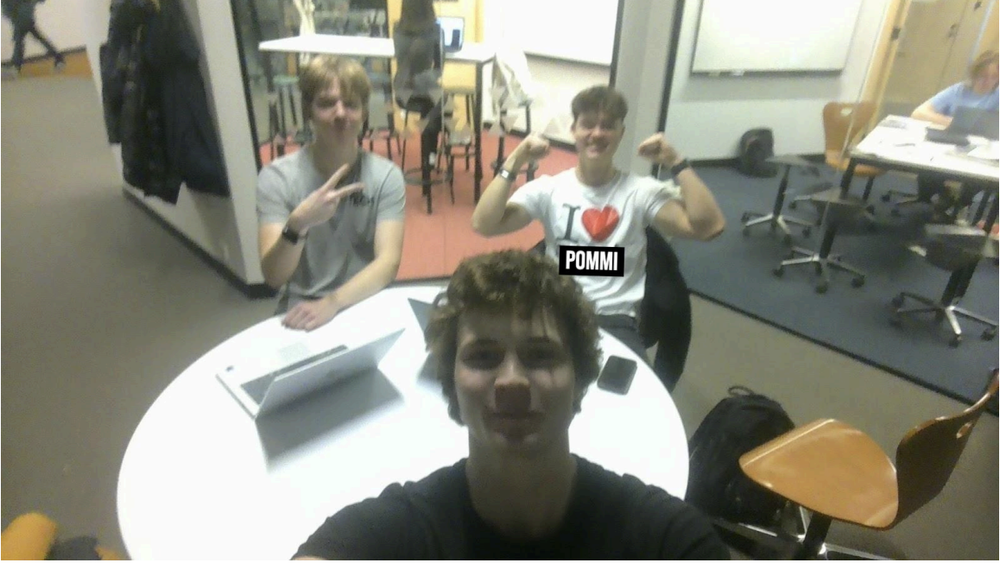

Tere tulemast!
See veebileht on loodud Karl Elmar Vikati, Mattias Reimandi ja Albert Lapsaniti koostöös. Siit leiad meie lemmiktoidud, samm-sammulised juhised ning killukese meie isiklikust stiilist.
Meie lemmikud

Šokolaadikook
Mattiase valik

Kreemine pasta sinihallitusjuustu kastmes
Alberti valik